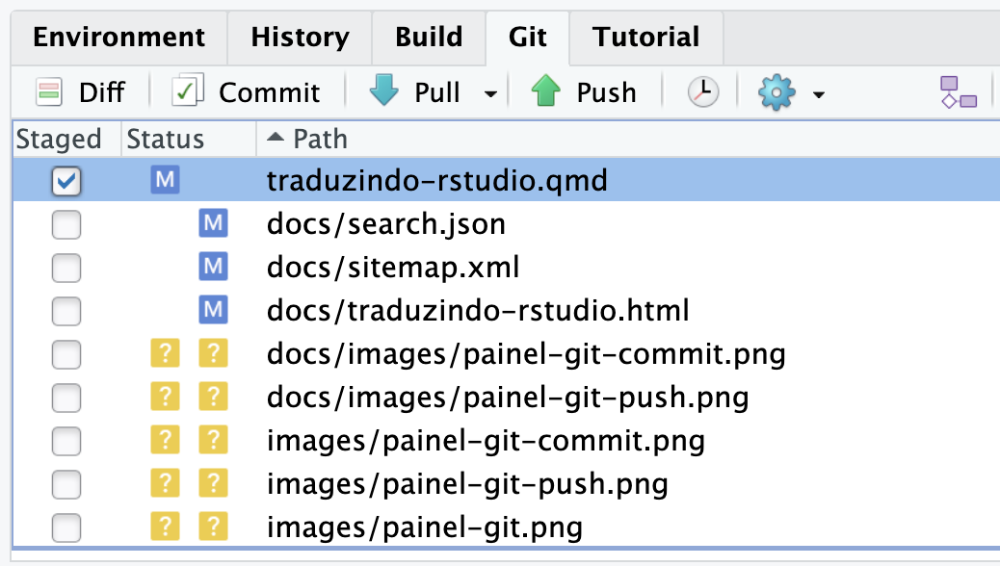
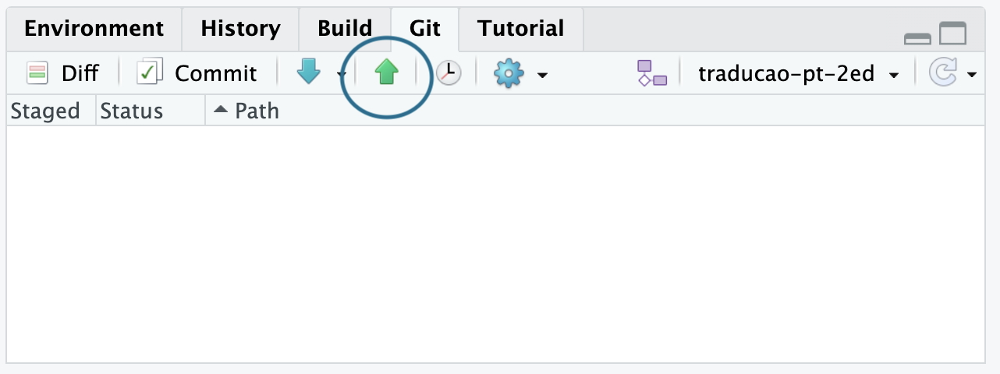
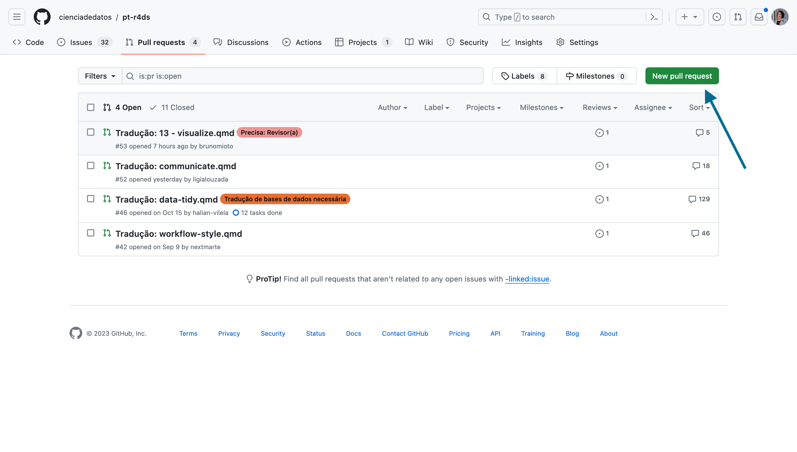

10 Traduzindo um capítulo
Os passos descritos até aqui são necessários apenas na primeira vez que você for iniciar no projeto de tradução.
Após isso, para cada capítulo que você for traduzir, você deve seguir os seguintes passos:
10.1 Alterando entre branches
Como citado em Seção 6.4, o Git permite que você tenha várias versões do seu código, chamadas de branches.
É importante verificar qual branch o projeto de tradução está usando como “referência” para trabalho. No caso do projeto de tradução do livro R4DS, a branch de referência é a traducao-pt-2ed.
Para verificar qual branch o projeto está usando, verifique no Painel Git do RStudio, em seu canto superior direito. Se a branch não for a traducao-pt-2ed, você pode alterar clicando no nome da branch e selecionando a branch correta.

10.2 Atualizando o repositório local
Para atualizar o repositório local, você deve primeiro verificar se há atualizações no repositório remoto. Para isso, clique no botão Pull no Painel Git do RStudio. Ele é representado por uma seta azul apontada para baixo.

10.3 Criar uma branch nova
Siga os passos após se certificar que está na branch correta (a utilizada como referência no projeto de tradução), e a branch está atualizada (através do botão Pull). Essas etapas são importantes para evitar conflitos no repositório, e foram citadas logo acima.
Devemos criar uma branch nova cada vez que iniciarmos a tradução de algum capítulo! Para isso, clique no botão New Branch no Painel Git do RStudio. Ele é representado por um ícone roxo e branco, ao lado do nome da branch atual. Ao clicá-lo, será solicitado o nome da branch. É recomendado que o nome da branch faça menção ao capítulo que será traduzido. Não adicione caracteres especiais, espaços, acentos, etc, no nome da branch. Após escolher o nome, clique em Create.

10.4 Abrindo o arquivo a ser traduzido
Após criar a branch nova, você deve abrir o arquivo a ser traduzido. Para isso, utilize o painel “Files” (arquivos) do RStudio, para navegar e encontrar o arquivo .qmd correspondente ao capítulo que você irá traduzir.
Por exemplo, no caso da tradução do livro R4DS, se você for traduzir o capítulo chamado “Communicate”, abra o arquivo communicate.qmd.
10.5 Traduzindo o capítulo
Após abrir o arquivo, você deve traduzir o capítulo, sobrescrevendo o texto original pelo texto traduzido.
Não altere a estrutura do texto e as marcações em markdown.
Lembre-se de seguir as orientações presentes em Capítulo 5.
10.6 Salvando as alterações
Conforme você for avançando na tradução do capítulo, você pode salvar as alterações que você fez no arquivo usando o Painel Git do RStudio.
Primeiro, selecione os arquivos que você deseja salvar clicando na caixa de seleção ao lado do nome do arquivo. No caso da tradução do livro R4DS, você deve selecionar o arquivo .qmd correspondente ao capítulo que você está traduzindo.

Após selecionar os arquivos, clique no botão Commit no Painel Git do RStudio. Ele é representado por um ícone verde e branco, ao lado do nome da branch atual. Ao clicá-lo, será solicitado que você escreva uma mensagem de commit. É recomendado que a mensagem de commit faça menção ao capítulo que está sendo traduzido. Após escrever a mensagem, clique em Commit.

Para que as alterações sejam salvas no repositório remoto, você deve clicar no botão Push no Painel Git do RStudio. Ele é representado por uma seta verde apontada para cima.

Você pode verificar se as alterações foram salvas no repositório acessando o seu repositório no GitHub, alterando para a branch usada para a tradução do capítulo, e verificando se as suas alterações aparecem no repositório.
10.7 Criando um Pull Request
Após terminar a tradução do capítulo, você deve criar um Pull Request (PR) para que as suas alterações sejam incorporadas ao repositório principal.
Para enviar um PR para o repositório da tradução, você deve acessar o repositório do projeto, e clicar no botão New Pull Request.

Ao clicá-lo, será solicitado que você escolha a branch que será usada como base para a comparação. Essa parte é muito importante! No caso do projeto de tradução do livro R4DS, verifique se as opções selecionadas seguem o padrão abaixo:
Base repository:
cienciadedatos/pt-r4dsBase:
traducao-pt-2edHead repository:
{NOME_DO_SEU_USUARIO}/pt-r4dsCompare:
{NOME_DA_SUA_BRANCH}
No caso da tradução do livro R4DS, o pull request deverá ser feito para a branch traducao-pt-2ed do repositório cienciadedatos/pt-r4ds.
CUIDADO: Ao criar o Pull Request, a primeira opcão oferecida é enviar para o repositório original do livro em inglês.
O GitHub apresentará a comparação do código existente no projeto de tradução, e o código da sua branch. Se estiver tudo ok, clique no botão Create Pull Request.
Uma página para a criação do Pull Request será aberta. Nela, você deve preencher o título e a descrição do Pull Request.
O nome do pull request deve ser estruturado da seguinte forma: "Tradução: {nome_do_arquivo.qmd}".
Na mensagem do Pull Request, registre todas as dúvidas e/ou incertezas que tenha tido ao traduzir, assim as pessoas que revisarem o capítulo podem se atentar aos pontos citados.
Envie a pull request, e aguarde a revisão do capítulo.